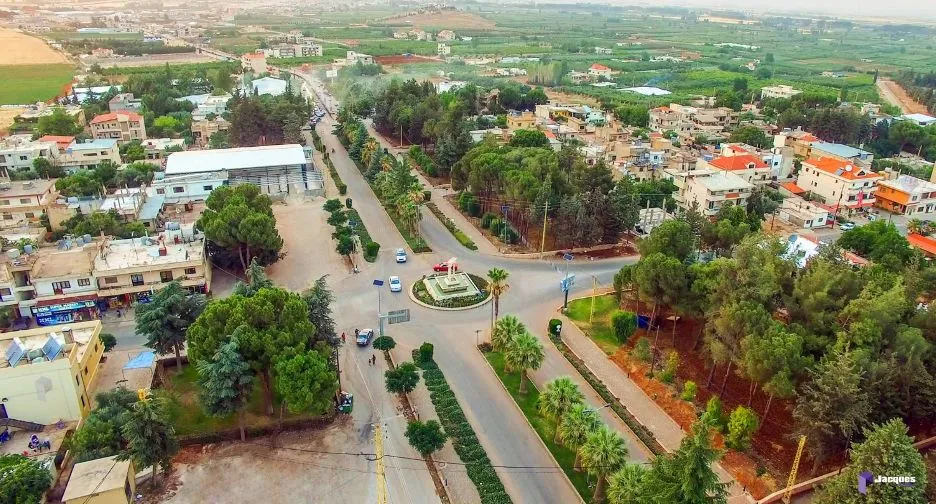
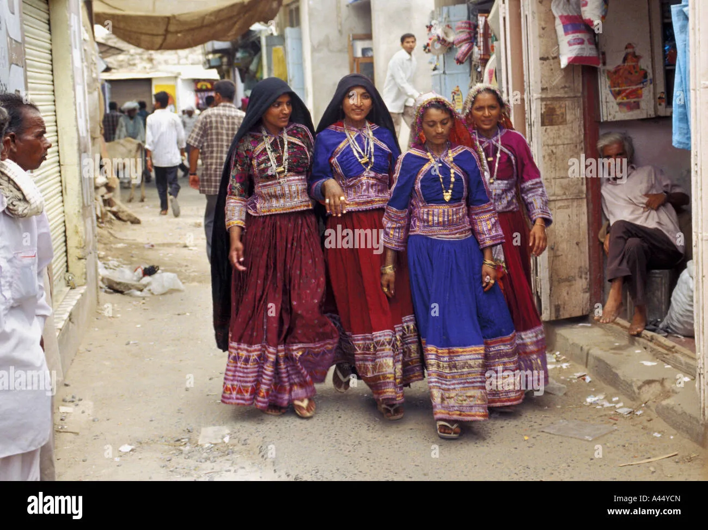
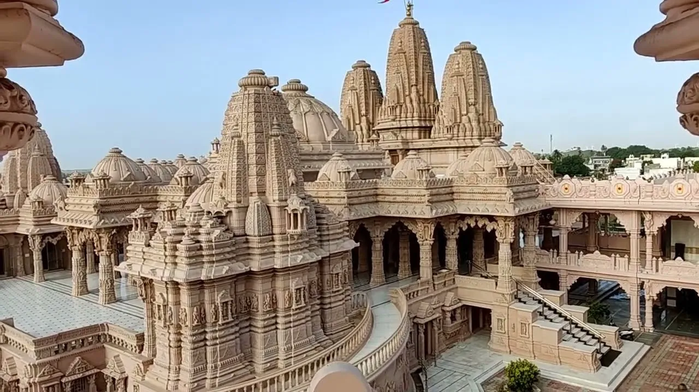
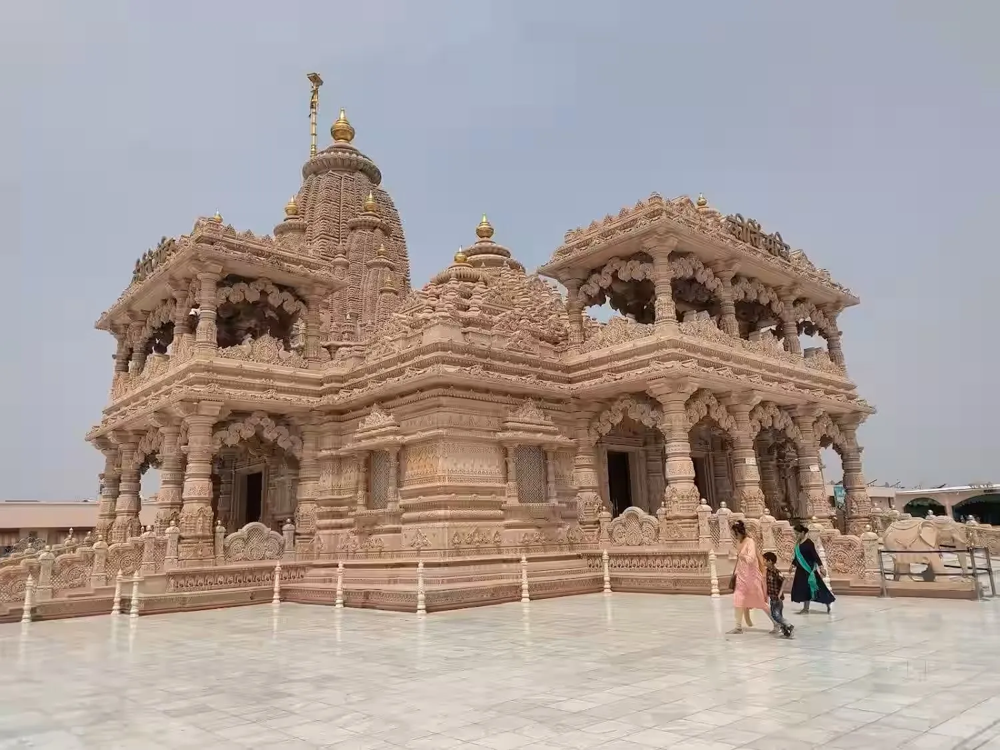
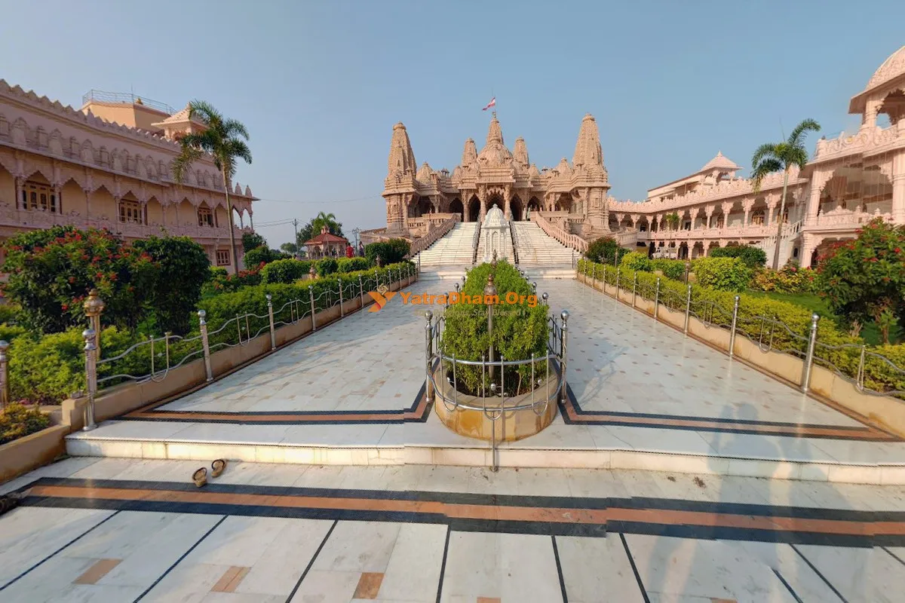
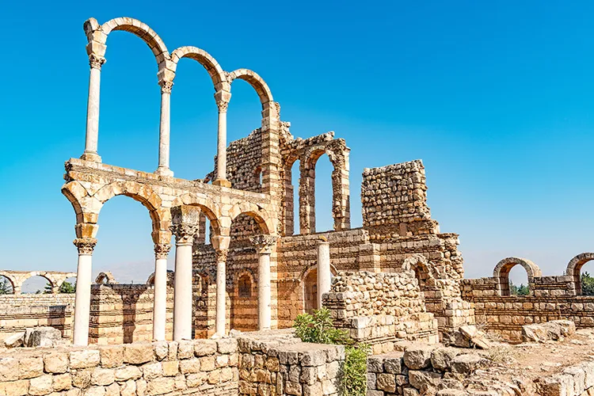

Anjar is the oldest capital of Kutch, with a history dating back to 650 AD. It is a town of legends, most famously that of 'Jesal and Toral', a robber-turned-saint and the queen who reformed him. Unlike the modern Gandhidham next door, Anjar retains a rustic, old-world charm with narrow bazaars famous for metalwork and textiles. It is a spiritual center and a shopper's delight for traditional Kutchi items.
Who Should Visit
- History & Culture Buffs: To witness the legendary shrines of Jesal-Toral.
- Shoppers: Famous for 'Anjar Knives', metal nutcrackers, and Batik prints.
- Pilgrims: A major stop for devotees visiting local temples.
- Offbeat Travelers: Those looking for authentic, non-touristy Kutch vibes.
How to Reach
- From Bhuj: 42km | 45 Mins. Frequent buses and shared taxis available.
- From Gandhidham: 15km | 20 Mins. It's practically a suburb of Gandhidham now.
- By Train: Anjar (AJE) is a station on the Bhuj-Gandhidham line, but Gandhidham Junction has better connectivity.
Landmarks & Heritage
The defining monuments

ImageJesal Toral Samadhi
(30-45 Mins) The heart of Anjar. Visit the shrines of the legendary couple. Open 6 AM - 8 PM.
Bazaar Walk
(1 Hour) Explore the Ganga Bazaar line for 'Sudi' (Nutcrackers) and Pen-Knives. Anjar's steel quality is legendary.
Bileshwar Mahadev
(30 Mins) An ancient Shiva temple with beautiful architecture.
Vira Balak Smarak
(45 Mins) A moving memorial dedicated to 185 schoolchildren who perished in the 2001 earthquake.
Curated Local Advice
Market Hours
The market often takes a strict siesta from 1 PM to 4 PM. Plan morning or evening visits.
Combined Trip
Combine Anjar with Gandhidham or Bhadreshwar; it's small enough for a half-day trip.
Knives on Flights
If you buy the famous Anjar knives, PUT THEM IN CHECK-IN BAGGAGE. They will be confiscated in carry-on.
Shopping & Bazaars
- Ganga Bazaar: The main market street famous for traditional metalwork. Find authentic Anjar knives, betel nut crackers (Sudi), and steel utensils. Best time: 10 AM - 1 PM and 4 PM - 8 PM.
- Metalwork Shops: Specialized blacksmith workshops where you can watch artisans forge traditional knives and tools. Custom orders accepted. Prices negotiable.
- Textile Market: Small shops selling Batik prints, Bandhani, and traditional Kutchi embroidery. Lower prices than Bhuj for similar quality.
- Jesal Toral Market Area: Around the shrine, find religious items, traditional sweets, and local handicrafts. Gets busy during festivals.
- Station Road Shops: Modern stores selling daily essentials, clothing, and some handicrafts. Fixed prices, convenient for quick shopping.
Local Eats
- Ghughra: Anjar is famous for its spicy 'Ghughra' (stuffed pastry snack). Try it at street stalls.
- Dabeli: Like all Kutch towns, Anjar has its own Dabeli variants.
- Metal Craft: Watch artisans make knives and betel nut crackers by hand.
When to Visit
October to March: Best weather. The 'Jesal Toral Mela' (Fair) usually happens around March (Holi), which is a great cultural experience but crowded.
Nearby Places to Visit
Location & Gallery




